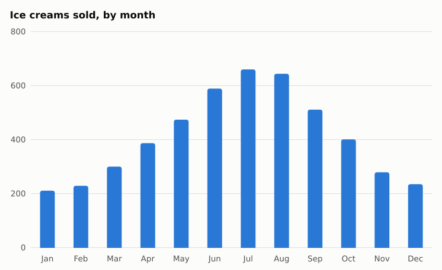
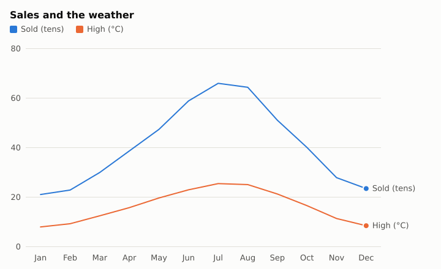

The data
A year of an ice-cream stand: each month's average high, in °C, and how many it sold.
weather.csv
month,high,sales
Jan,8.1,212
Feb,9.4,230
Mar,12.6,301
Apr,15.9,388
May,19.8,475
Jun,23.1,590
Jul,25.6,661
Aug,25.2,645
Sep,21.4,512
Oct,16.7,402
Nov,11.5,280
Dec,8.6,236The script
report.moth
use "stats.moth" as stats
use "charts.moth" as charts
use "text.moth" as text
# each of the numbers times `by`
to scaled with numbers, by
set made to empty list
for each n in numbers
add n * by to made
end
return made
end
set rows to read table "weather.csv"
set months to empty list
set highs to empty list
set sales to empty list
for each row in rows
add month of row to months
add high of row to highs
add sales of row to sales
end
say "Ice creams sold a month: mean " text's number_text(stats's mean(sales), 1) ", median " stats's median(sales)
say "spread (standard deviation): " text's number_text(stats's stdev(sales), 1)
say "quartiles: " stats's quantiles(sales, 4)
say "correlation with the day's high: " text's number_text(stats's correlation(highs, sales), 3)
set line to stats's straight_line(highs, sales)
say "each degree warmer sells about " text's number_text(slope of line, 1) " more"
say "at 30 degrees, expect about " (intercept of line + slope of line * 30) rounded
set chart to charts's bar_chart("Ice creams sold, by month", months, sales)
charts's save(chart, "sales.svg")
set both to dictionary where "Sold (tens)" is scaled(sales, 0.1), "High (°C)" is highs
charts's save(charts's line_chart("Sales and the weather", months, both), "sales-and-highs.svg")$ moth run --allow-read --allow-write report.moth
Ice creams sold a month: mean 411.0, median 395
spread (standard deviation): 164.2
quartiles: [247, 395, 570.5]
correlation with the day's high: 0.995
each degree warmer sells about 25.2 more
at 30 degrees, expect about 752A correlation near 1 says the two go up together; straight_line is the line closest to the points, by least squares, as a record of its slope and intercept, so a temperature it hasn't seen can be guessed from it.
The charts
bar_chart and line_chart take a title, the labels along the bottom, and the numbers: a list, or a dictionary of lists for a series each, in colours that stay apart for colour-blind eyes, with a legend. save writes SVG or PNG by the file's name.


An SVG is sharp at any size and says each bar's number when the mouse is on it; sized(chart, 1200, 600) is the same chart bigger, and png_of(chart) its PNG's bytes.
See also
- arrays.moth for maths on whole tables of numbers at once, as NumPy does.
- Reading and writing CSV and JSON, for the data's way in and out.